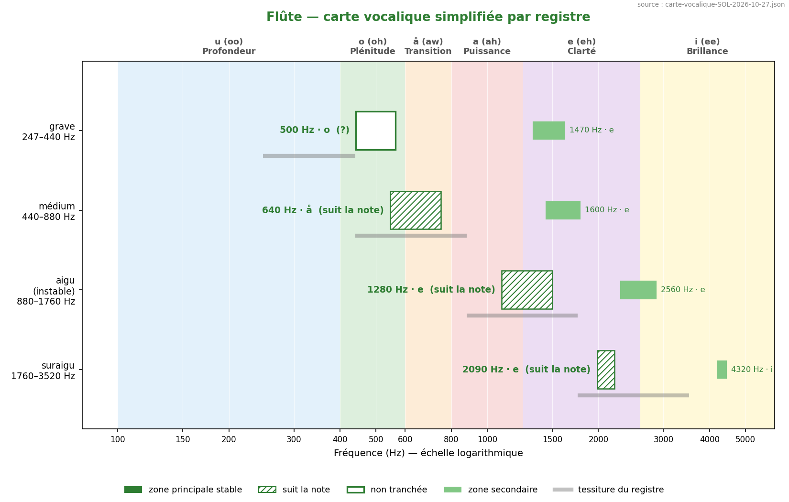
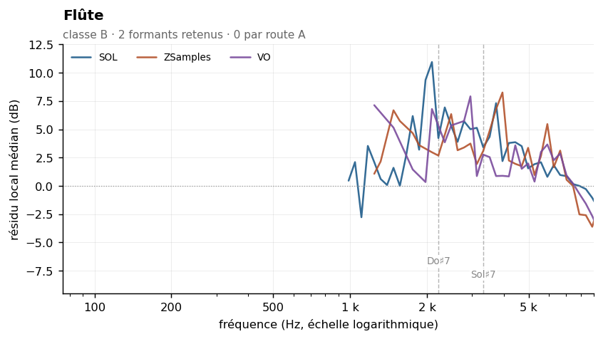
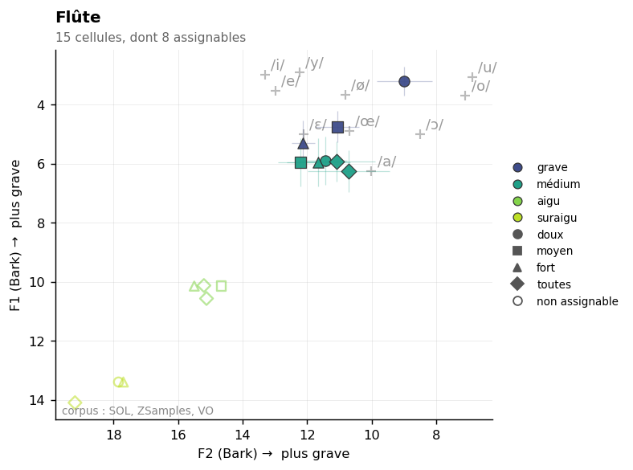

Flute
Sommaire › Les bois
| Classe | Provenance | Échantillons | Tessiture | Formants établis |
|---|---|---|---|---|
| B | IRCAM | 118 | B3–D7 | 0 |



Statut des formants — révision du 26/10/2026
Confrontation des cinq corpus. Provenance de ce corpus : IRCAM (FullSOL2020).
Formant Statut 2216 Hz présent dans le seul corpus SOL 3320 Hz présent dans le seul corpus SOL
etendue_residudans l'en-tête n'est pas une largeur de bande : c'est l'étendue du résidu de la méthode 8, souvent une butée de plage. Les largeurs mesurées sont dans_LARGEURS-DE-BANDE.md.
Méthode 8 — un formant retenu, un fragile. Pertinence partielle. Voir
00-METHODE.md.
La flûte est un cas intermédiaire, et c'est ce qui la rend instructive. Elle appartient clairement à la classe B : ρ = 0,91, son spectre suit la hauteur presque autant que celui du piccolo. Meyer et Giesler l'affirment d'ailleurs sans détour — « pas de formants fixes ».
Mais sa tessiture descend à 247 Hz, et elle offre une médiane de 14 harmoniques par note, deux fois plus que le piccolo. L'agrégation sur 118 notes dispose donc d'assez de points pour détecter des résonances étroites, là où le piccolo n'en avait pas. D'où la mention « partielle » : l'instrument n'a pas de formant au sens d'une résonance de corps, mais l'agrégation révèle des zones de renforcement réelles et reproductibles.
Important : ces zones ne sont pas celles de l'ancienne étude. Le F1 publié à 742,9 Hz coïncide à 2 % près avec le milieu géométrique de la tessiture (761 Hz). C'était la hauteur médiane, non un formant. Et c'est la raison de la fausse convergence « flûte–hautbois Δ = 0 Hz », les deux instruments ayant par coïncidence leur médiane de tessiture dans le même bin de FFT.
| Zone | Résidu | Largeur −3 dB | Notes distinctes | Verdict |
|---|---|---|---|---|
| 3 320 Hz | +5,0 dB | 1 759–4 974 Hz | 12 | retenu |
| 2 216 Hz | +7,4 dB | 1 863–3 517 Hz | 7 | fragile |
| Zone | k = 2–3 | k = 4–7 | k = 8–15 | k ≥ 16 | Robustesse |
|---|---|---|---|---|---|
| 3 320 Hz | +8,9 | +5,0 | +3,4 | — | oui |
| 2 216 Hz | +8,2 | +5,4 | +4,2 (4 notes) | — | oui |
Le pic à 2 216 Hz n'est classé fragile que pour une raison de couverture : son groupe k = 8–15 n'est alimenté que par 4 notes distinctes, sous le seuil de 5. Il passe le test de robustesse et présente le résidu le plus fort de l'instrument (+7,4 dB). Il doit être considéré comme probable, non comme infirmé — c'est un manque de notes graves, non une contradiction. Il correspond au ~1 700 Hz de Backus, seule valeur de la littérature qui visait une zone haute pour la flûte.
| Descripteur | Valeur | Lecture |
|---|---|---|
| Pente spectrale médiane | −18,3 dB/octave (σ 2,5) | décroissance raide, typique du tuyau ouvert |
| Harmoniques par note | 14 [4–44] | suffisant pour l'agrégation |
| Balance impair − pair | −4,2 dB | tuyau ouvert |
| Enveloppe vraie (méthode 6) | 867 Hz, σ 600 | σ énorme : confirme le comportement suiveur |
L'écart-type de 600 Hz sur l'enveloppe vraie est à lire comme un résultat positif : il quantifie l'absence de formant fixe. À comparer au basson, σ = 87 Hz.
| Source | Valeur annoncée | Notre mesure | Lecture |
|---|---|---|---|
| Meyer (2009) | « PAS DE FORMANTS FIXES », o/u variable | ρ = 0,91 | confirmé quantitativement |
| Giesler (1985) | « pas de formants fixes » | ρ = 0,91 | confirmé |
| Backus (1969) | ~1 700 Hz | 2 216 Hz (fragile) | proche |
Ancien pipeline specenv |
F1 = 743 Hz | — | hauteur médiane de tessiture |
| Ancien Fp | 1 535 Hz | — | artefact de fenêtre |
Le document antérieur attribuait à la flûte deux voyelles, /å/ par le F1 et /e/ par le Fp, alors que son propre tableau des sources indiquait « pas de formants fixes » pour Meyer et Giesler. Cette contradiction interne est levée : les sources avaient raison.
Data/registres.md : grave B3–A4 · médium A4–A5 · aigu A5–A6 · suraigu au-dessus.
Mesure par registre : non encore effectuée avec la nouvelle méthode. Elle est ici particulièrement souhaitable, le comportement de la flûte changeant beaucoup avec le registre et le souffle.
Note sur l'ancienne analyse par registre : elle donnait F1 = 560 Hz pour le suraigu
(A#6–D7, soit 1 865–2 349 Hz), c'est-à-dire sous la fondamentale. Ce pic à −25,8 dB
était du souffle, alors que le pic à 1 507 Hz atteignait −15,3 dB. Les tableaux par registre
classaient donc les pics par fréquence croissante, et non par proéminence comme la
méthodologie l'annonçait — ce que confirme la lecture de find_formant_peaks dans
Scripts/extract_formants_all_techniques_v3_stats.py, documenté « triés par fréquence ».
Rang du formant dans son propre spectre : 50 % signifie que les deux méthodes ne s'accordent pas mieux là qu'ailleurs. Voir ../_APPARIEMENT-LPC.md.
| Formant | Statut | Rang |
|---|---|---|
| 2216 Hz | 1 corpus | 26,1 % |
| 3320 Hz | 1 corpus | 82,6 % |
Part de pics non localisables — l'enveloppe n'y redescend pas de 3 dB des deux côtés, donc le formant n'a pas de largeur mesurable. Voir ../_LARGEUR-PAR-REGISTRE.md.
| doux | moyen | fort | |
|---|---|---|---|
| tous registres | 12 % | 2 % | 0 % |
| grave | 19 % | 5 % | 0 % |
| médium | — | 0 % | 0 % |
Effet doux → fort : +12 points. La localisation s'améliore en jeu fort.
Non. F2 0,0 % contre 9,3 % au témoin — soit le hasard, ou moins. Les deux méthodes ne mesurent pas la même région du spectre : F1 se situe en médiane à 15,5 demi-tons du formant établi le plus proche, parce que la méthode 8 ne mesure rien sous 3,2 à 5,7 fois f0_min.
Témoin : les propres formants de l'instrument transposés de ±2 à ±6 demi-tons, ce qui conserve leur nombre et leur espacement. Voir ../_COINCIDENCES-F2.md.
19 paires calculées. Fusion moyenne : 13 %. Voir ../_MELANGES.md.
| Couleur nouvelle avec | Se fond avec | ||
|---|---|---|---|
| Trompette en Ut | 27 % | Petite flûte | 75 % |
| Tuba basse | 19 % | Clarinette en Mib | 66 % |
| Hautbois | 18 % | Clarinette en Sib | 55 % |
Trois doublures classiques que l'ancienne matrice ne pouvait pas voir, et pourquoi.
Flûte–clarinette à l'octave, flûte au-dessus. La fondamentale de la flûte tombe sur l'harmonique 2 de la clarinette — justement le partiel pair affaibli par le tuyau cylindrique fermé. La flûte comble le spectre lacunaire de la clarinette. C'est une complémentarité parfaite, invisible dans une comparaison F1 contre F1. La balance impair − pair mesurée ici, −4,2 dB pour la flûte contre +0,7 dB pour la clarinette en Sib, donne la base quantitative de ce raisonnement.
Flûte–clarinette à l'unisson. Deux instruments à pic suiveur jouant la même note ont, par construction, le même « F1 ». La convergence est triviale dans le cas réel et absente de l'ancienne matrice, qui comparait des médianes globales.
Flûte deux octaves au-dessus du basson (doublure préférée de Mozart). Pour un basson entre D3 et D4, la flûte joue entre 587 et 1 175 Hz : sa fondamentale tombe exactement entre les deux premiers formants mesurés du basson (554 et 1 108 Hz) et sur l'harmonique 4 de celui-ci. C'est une convergence de type fondamentale suiveuse × formant fixe, probablement la plus élégante de l'orchestre, et aucune matrice F1 × F1 ne peut la détecter. À valider par la méthode 12.
Aucun à ce stade. Figures prévues dans ../Versions-html-and-docx/media/ :
| Fichier prévu | Contenu |
|---|---|
flute_composite.png |
enveloppe composite avec les deux zones et leur couverture |
flute_te_sigma.png |
dispersion du pic d'enveloppe vraie contre f0 — illustration du comportement suiveur |
flute_clarinette_peigne.png |
superposition des peignes harmoniques flûte/clarinette à l'octave |
La zone à 2 216 Hz passe de fragile à retenu-cr. Elle était fragile pour une raison de couverture seulement, ce que le fichier signalait déjà. Le bootstrap par note le confirme : +7,4 dB [IC +6,3] en dessous du rang 6 et +5,4 dB [IC +4,0] au-dessus, sur 46 et 21 points.
C'est la zone que Backus situait vers 1 700 Hz, seule valeur de la littérature visant une région haute pour la flûte. Elle est donc désormais établie, et c'est le formant le plus fort de l'instrument (+7,4 dB).
00-METHODE.md).